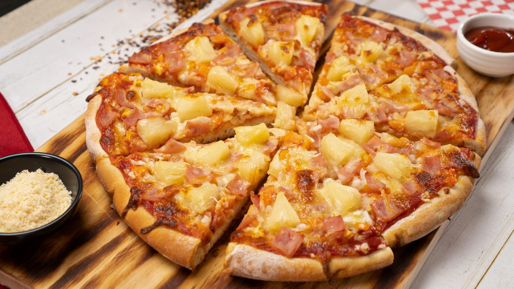

Hawaiian Pizza

Ingredients
- 14 oz pizza dough, prepared
- 1 cup marinara sauce
- 1 cup pineapple chunks, drained if using canned
- 1 cup tomatoes, chopped
- 1/2 cup yellow onions, chopped
- 1 cup sandwich ham slices, chopped
- 1 1/2 cups mozzarella cheese, shredded and divided
- cooking spray
- all-purpose flour, for dusting
Instructions
- Preheat the oven to 350 degrees F.
- Grease a 9-inch pizza tray with cooking spray, dust with flour, and tap to remove any excess.
- Dust your working area with flour, then place your pizza dough on it.
- Roll until your dough is roughly 1/2 inch on all sides, then spread the dough on the pizza tray.
- Cover with a damp towel and let the dough rest for an hour at room temperature.
- Blind bake your pizza dough for 10 minutes.
- Evenly spread the marinara sauce over the pizza crust afterward, leaving a 1-inch border.
- Sprinkle 1 cup cheese to cover the dough with marinara sauce.
- Sprinkle the chopped tomatoes, pineapple chunks, onions, and ham slices all over the dough. Top it off with your remaining shredded mozzarella cheese.
- Increase your oven to 450 degrees F. Bake for roughly 25 minutes, until the crust turns brown and the cheese is melted.
- Remove from the oven, cut, and serve. Enjoy!